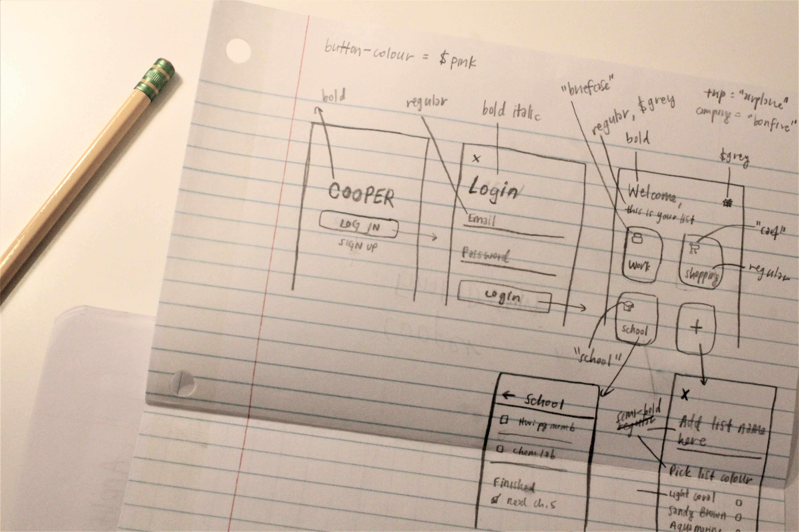
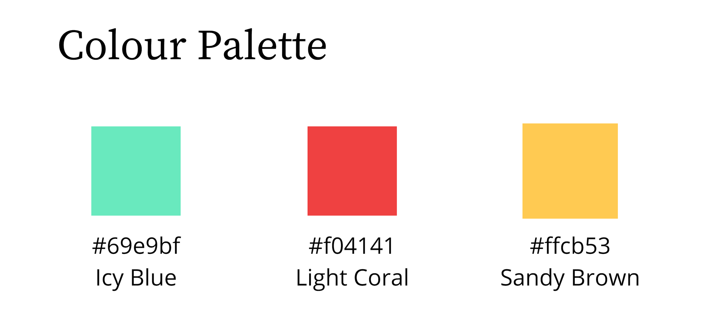
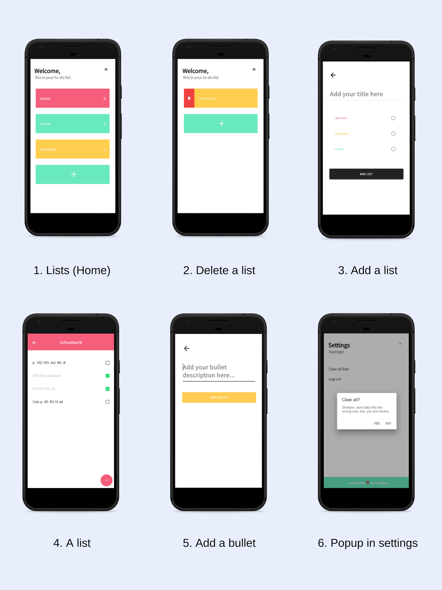

02. Cooper
A study in minimalistic design and Google Firebase functions.
“In the successful organization, no detail is too small to escape close attention.”
Cooper is my first mobile app. It started out as a little project in a study of Firebase database functions, with me following a YouTube tutorial and learning Ionic on the fly (shoutout to my homie Paul Halliday).
Eventually I discovered minimalistic design on Dribble and began experimenting with it on Cooper.
Project Type
hybrid mobile app, iOS & Android
Languages
HTML, SCSS, Typescript
Framework & Backend
Built on Ionic (v.4) using Google Firebase Realtime Database and Angular
Timeline
Aug 2018 - Dec 2018
Choosing a Framework
When I first started, I did not know anything about frameworks or mobile apps, other than that I needed $99 for an Apple Dev. membership (not good news for a broke high school student). I was fresh out of Kode With Klossy and was an amateur Ruby, HTML, CSS, JS coder. Heck, I wasn’t even a proficient JS coder. The only JS I’d done was a simple animation with JQuery.
But one thing was for sure. I wanted to try my hand at a mobile app. My time at Kode With Klossy had brought about an enthusiasm for learning. It even taught me that code can be learnt by anyone anytime, as long as enough effort is put in.
I began researching different options for mobile apps, my search taking me through various frameworks, preprocessors and nomenclature.
Finally, I discovered Ionic and a surprising amount of YouTube tutorials surrounding the framework and its dependencies.
The Build-Up
After following YouTube tutorials for around three weeks or so, I figured I was ready to try a real app on my own.
I started by sketching out several drafts of what I wanted my simple (but sophisticated) app to look like. Eventually, they evolved into more defined, polished sketches.

Then, with the preliminary drafts in hand, I picked out a colour scheme:

The Code
As with more projects, the hardest part of the programming side was concentrated in back-end. Specifically, implementing queries and snapshots in my typescript files, because in order to retrieve Firebase values, I needed to obtain the Firebase generated keys from my database.
Ultimately, after long evenings of trial and error, Stack Overflow questions, and hand-written code, I figured out a system for the whole JSON and learned how to query.
Updating Versions
Halfway through my coding process, Ionic released a new version of its framework: version 4. The problem was, v. 4 uses Angular routing and has a whole different set of Ionic APIs.
It wasn’t too hard to look up the v. 4 div tag names and change them in, but it did take a very long time. The entire process took nearly two weeks, in fact, squeezed in between school and classwork.
Angular Routing
Due to the Ionic version update, I was introduced to a new way of routing—Angular style. This actually helped quite a bit with redirecting users to their respective pages.
For example, if a user weren’t logged in, I would want to take them to the login page. And, vice versa, if a user were logged in, I would want to route them straight to the home page, chock full of their own lists.
With Angular routing and Firebase auth functions, I achieved those goals effortlessly. (Ok, that’s a lie, it took me a good week to figure it all out.)
Final (For Real)
As I learned more about minimalism and listened to more Ariana Grande, my designs for Cooper evolved into this beaut.

Reflection
I really take to heart the whole process of designing and coding Cooper, and not only because it was my first app. Here are a few takeaways.
Design Beforehand
As I finished up Cooper, I realised that if I hadn’t drawn out my early ideas for the design, I would have been utterly lost. For me particularly, without even a simple set of guidelines, I would have spent far too much time on the front-end and lost valuable time working on back-end.
Ask Questions
If I had given into my initial shyness at asking questions, I would never have finished the app. It’s imperative to turn to the resources that I have, such as older friends, software engineer advisors, and even random people on Stack Overflow.
Be Humble
There are so many more things that I have left to learn as a coder. Recognising that I’m not some great coding warrior opens me up to opportunities to learn and challenge myself.